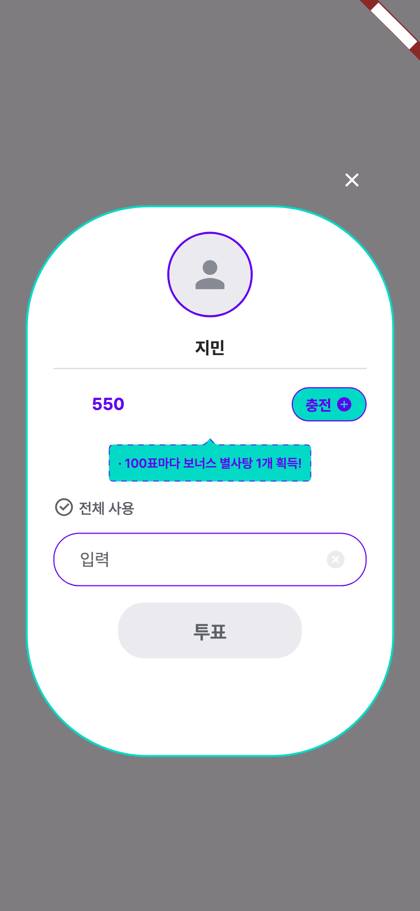
2026-09-21 · 모든 이미지는 해당 브랜치 코드를 실제로 렌더한 결과다(393폭, 프로덕션 폰트). 이전 = main 293b7e189, 이후 = PR 브랜치.
PR #251 — 투표 버튼을 디자인의 고정 알약(172)으로 되돌리고, 긴 라벨은 한 줄로 줄여 맞춘다. 투표를 누르는 순간 버튼이 줄어들던 문제도 고친다.
PICNIC-2738 첫 수정 — 카운트다운 "투표 시작까지" 라벨이 1.3배부터 위아래가 잘리던 것을 고친다.

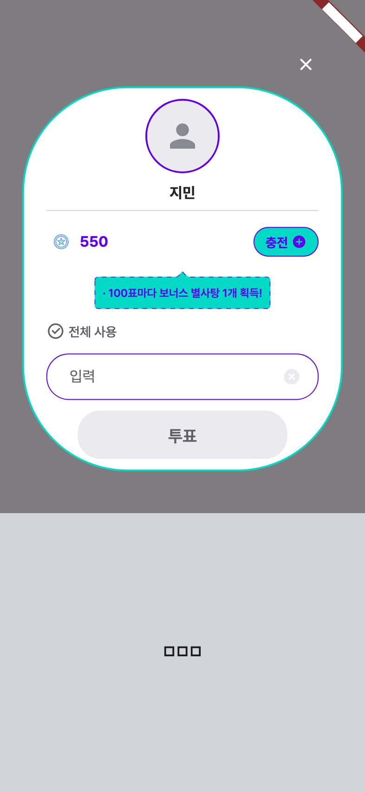
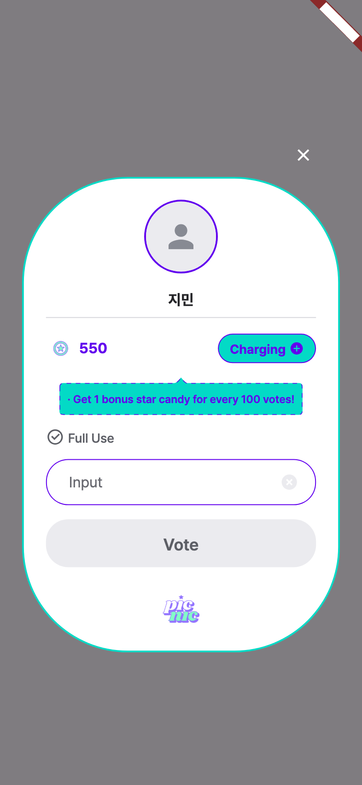
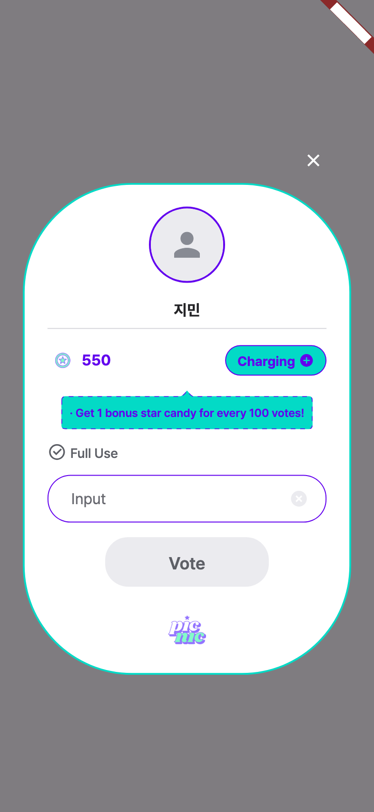
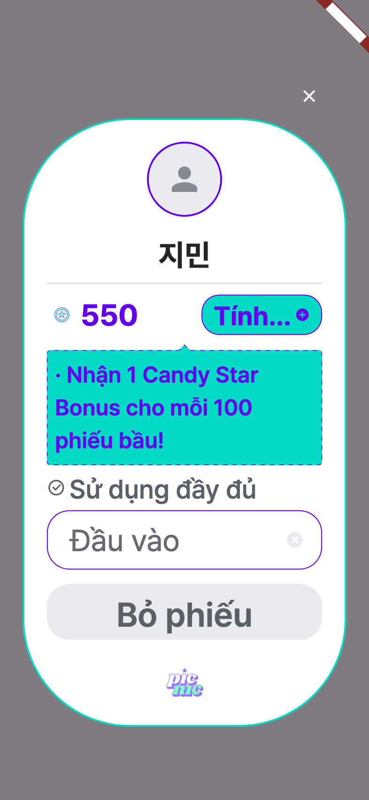

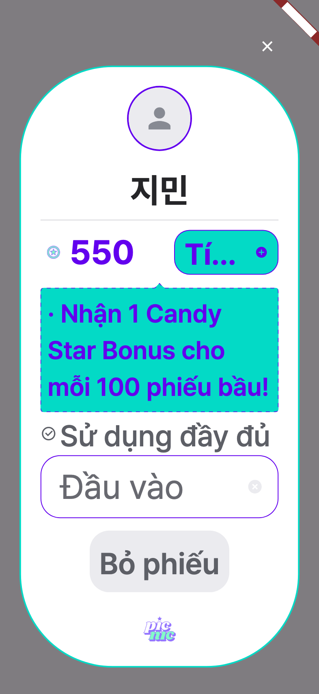
빨간 테두리가 버튼의 실제 크기다. 다이얼로그는 평상시 높이로 공간을 잡아 두므로, 누르는 순간 버튼이 줄면 카드 전체가 손가락 아래에서 튄다.
| 평상시 | 투표 중 | |
|---|---|---|
| 이전 | 142.3px | 52.0px (−90px) |
| 이후 | 74.3px | 74.3px |
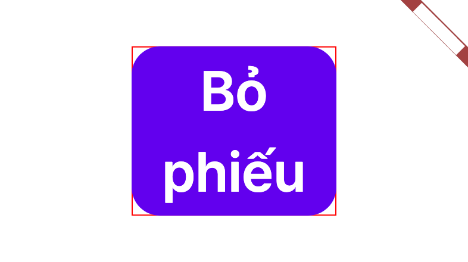
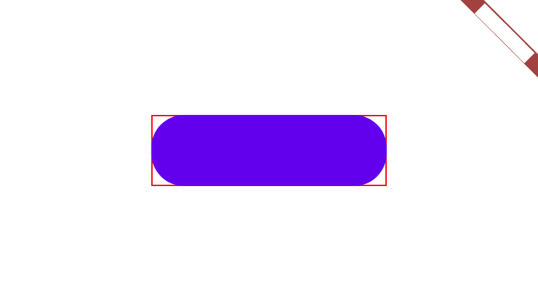
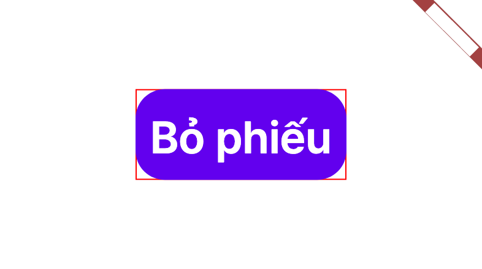
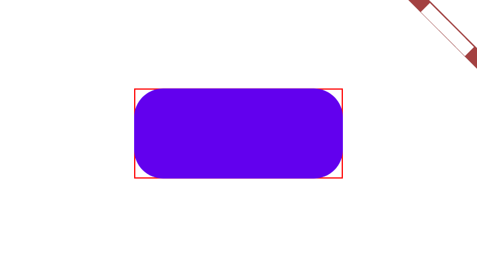
투표 중 로딩 표시는 애니메이션이라 테스트 캡처에는 그려지지 않는다. 실제 앱에서는 버튼 가운데에 표시된다.
라벨 상자가 높이 20으로 고정돼 있어, 글자 배율 1.3부터 위아래가 잘렸다. 한국어를 포함한 모든 언어에서 해당한다.
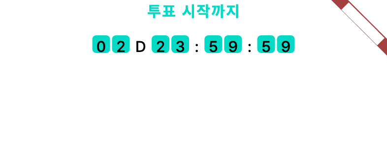
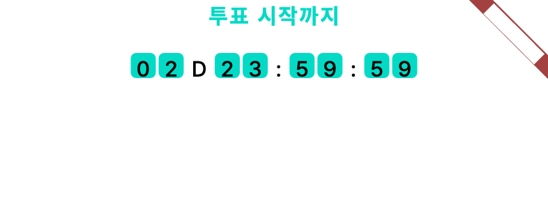
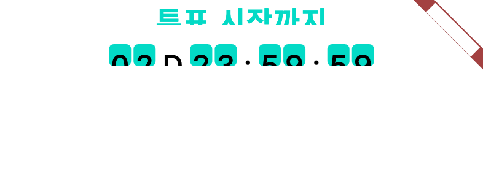
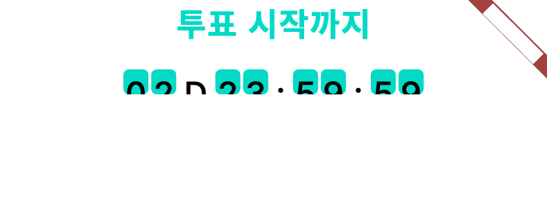
미리보기에서 새로 드러난 기존 결함. 2.0배에서 아래 숫자 행(02 D 23 : 59 : 59)이 이전·이후 모두 반쯤 잘린다. 숫자 타일이 18×18 로 고정인데 2.0배 글자는 그보다 크다. 1.3배까지는 멀쩡하다. 이번 수정과 무관하고, 전수 조사가 "번역 문자열" 만 봐서 숫자라 빠졌다. 홈 추천 카드 테스트는 이 행을 2.0배까지 검증한다고 적혀 있지만 폭과 타일 크기만 보고 글자가 잘리는지는 보지 않는다. PICNIC-2738 에 추가해 이어서 고친다. 앱은 시스템 글자 배율에 상한을 두지 않으므로 2.0배는 실제 기기에서 그대로 나온다.
1.0배 비교는 before_countdown_ko_1.0.png · after_countdown_ko_1.0.png — 둘이 같다.